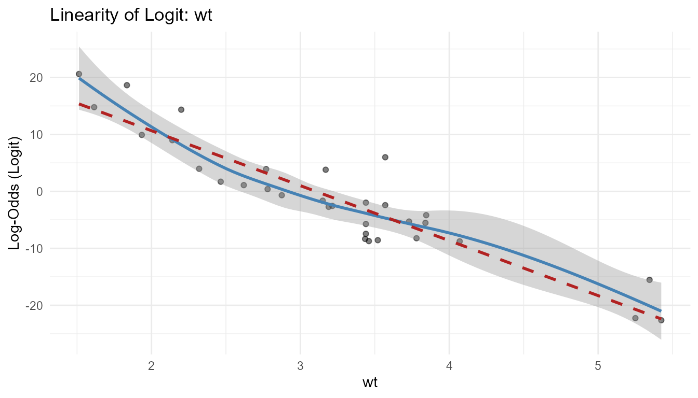
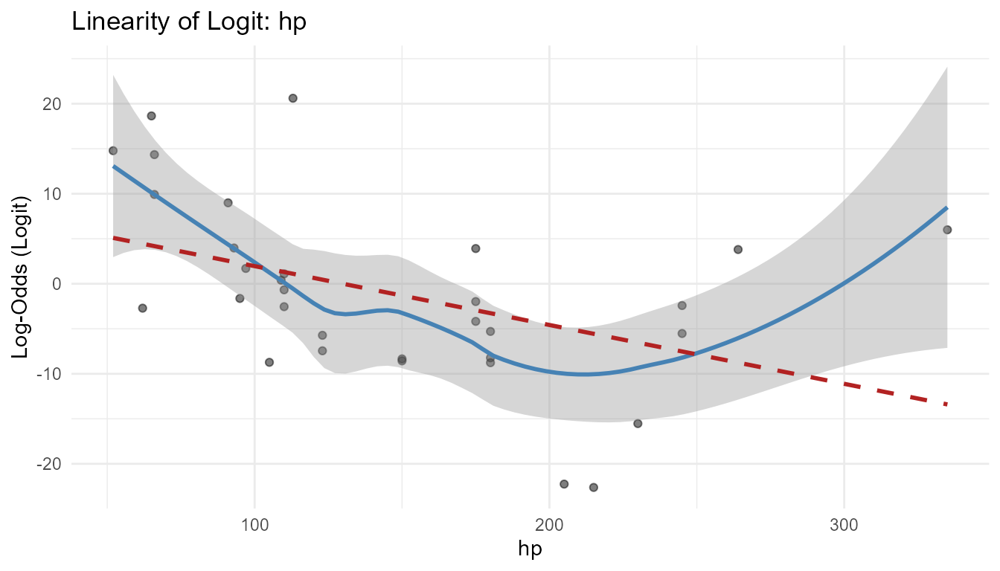
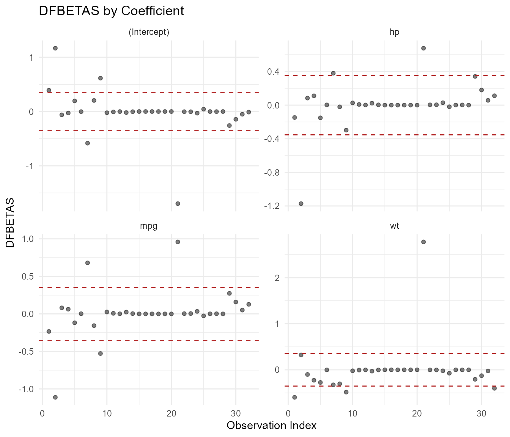
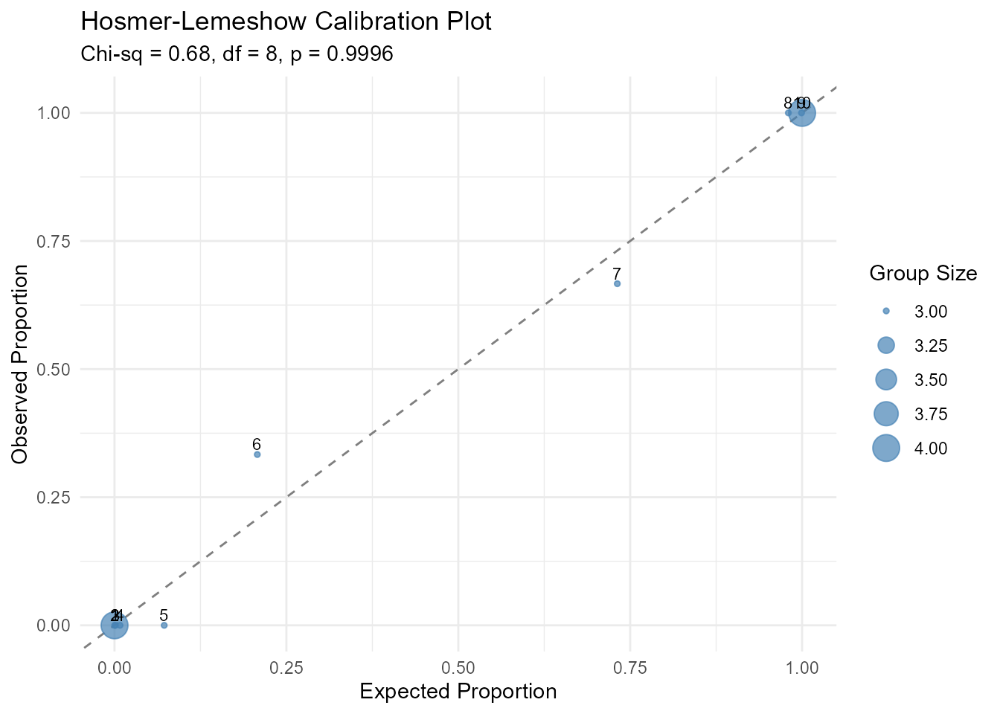

Diagnosing Logistic Regression with glmassume
glmassume-walkthrough.RmdOverview
The glmassume package provides visual and statistical
diagnostics for logistic regression models. This vignette walks through
a complete workflow using built-in data.
The diagnostics implemented here follow the framework presented in:
Hosmer, D.W., Lemeshow, S., and Sturdivant, R.X. (2013). Applied Logistic Regression, 3rd Edition. John Wiley & Sons. Chapters 4–5.
We will:
- Fit a logistic regression model
- Check linearity of the logit
- Examine residuals
- Assess influential observations
- Test goodness of fit with the Hosmer-Lemeshow test
- Check multicollinearity
- Run the all-in-one diagnostic panel
The Data
We’ll use the mtcars dataset and model the probability
that a car has a manual transmission (am = 1) based on
miles per gallon (mpg), weight (wt), and
horsepower (hp).
str(mtcars[, c("am", "mpg", "wt", "hp")])
#> 'data.frame': 32 obs. of 4 variables:
#> $ am : num 1 1 1 0 0 0 0 0 0 0 ...
#> $ mpg: num 21 21 22.8 21.4 18.7 18.1 14.3 24.4 22.8 19.2 ...
#> $ wt : num 2.62 2.88 2.32 3.21 3.44 ...
#> $ hp : num 110 110 93 110 175 105 245 62 95 123 ...
table(mtcars$am)
#>
#> 0 1
#> 19 13Fit the Model
model <- glm(am ~ mpg + wt + hp, data = mtcars, family = binomial)
summary(model)
#>
#> Call:
#> glm(formula = am ~ mpg + wt + hp, family = binomial, data = mtcars)
#>
#> Coefficients:
#> Estimate Std. Error z value Pr(>|z|)
#> (Intercept) -15.72137 40.00281 -0.393 0.6943
#> mpg 1.22930 1.58109 0.778 0.4369
#> wt -6.95492 3.35297 -2.074 0.0381 *
#> hp 0.08389 0.08228 1.020 0.3079
#> ---
#> Signif. codes: 0 '***' 0.001 '**' 0.01 '*' 0.05 '.' 0.1 ' ' 1
#>
#> (Dispersion parameter for binomial family taken to be 1)
#>
#> Null deviance: 43.2297 on 31 degrees of freedom
#> Residual deviance: 8.7661 on 28 degrees of freedom
#> AIC: 16.766
#>
#> Number of Fisher Scoring iterations: 101. Linearity of the Logit
A key assumption of logistic regression is that each continuous
predictor has a linear relationship with the log-odds (logit) of the
outcome (Hosmer, Lemeshow, & Sturdivant, 2013, Section 4.2). The
plot_linearity_logit() function overlays a loess smoother
(blue) and a linear fit (red dashed) on each predictor vs. the predicted
logit. If the loess curve deviates substantially from the linear fit,
the linearity assumption may be violated.
One common approach for assessing this assumption is the Box-Tidwell test (Box & Tidwell, 1962), which adds interaction terms between each predictor and its natural log to the model. A significant interaction suggests nonlinearity. The visual approach used here provides a complementary, intuitive check.
linearity_plots <- plot_linearity_logit(model)
linearity_plots[["mpg"]]
linearity_plots[["wt"]]
linearity_plots[["hp"]]
What to look for: The blue loess curve should track closely with the red dashed line. Curvature or systematic departures suggest you may need a transformation (e.g., polynomial or spline term) for that predictor.
2. Residual Diagnostics
Residual plots help identify systematic patterns that indicate model
misspecification. For logistic regression, deviance and Pearson
residuals are the two most commonly used types (Hosmer, Lemeshow, &
Sturdivant, 2013, Section 5.2). plot_residuals() supports
deviance, Pearson, and response residuals plotted against fitted values
or observation index.
Deviance residuals are the signed square roots of the individual contributions to the model deviance (McCullagh & Nelder, 1989, Section 2.4). Pearson residuals standardize the difference between observed and fitted values by the estimated variance.

Pearson residuals vs. index
plot_residuals(model, type = "pearson", vs = "index")
What to look for: The loess smoother should be roughly flat and centered near zero. A trend suggests the model is systematically over- or under-predicting in certain ranges.
3. Influential Observations
Influential observations can disproportionately affect model
estimates. The plot_influence() function provides three
diagnostic views based on standard regression influence measures (Cook,
1977; Belsley, Kuh, & Welsch, 1980; Hosmer, Lemeshow, &
Sturdivant, 2013, Section 5.3).
Cook’s Distance
Cook’s distance (Cook, 1977) measures the overall influence of each observation on the fitted model. It combines leverage and residual magnitude into a single summary. Points above the dashed threshold line () warrant investigation.
plot_influence(model, type = "cooks")
Leverage (Hat Values)
High-leverage points have unusual predictor values. The hat matrix diagonal (Hoaglin & Welsch, 1978) quantifies this. The threshold line is at where is the number of parameters.
plot_influence(model, type = "leverage")
DFBETAS
DFBETAS (Belsley, Kuh, & Welsch, 1980) show how each observation affects individual coefficient estimates. Points beyond are flagged.
plot_influence(model, type = "dfbetas")
What to look for: Observations that appear above the threshold in multiple plots are strong candidates for further examination. Consider whether they are data errors, outliers, or legitimately extreme cases. Pregibon (1981) provides the foundational treatment of logistic regression diagnostics.
4. Hosmer-Lemeshow Goodness-of-Fit Test
The Hosmer-Lemeshow test (Hosmer & Lemeshow, 1980; Hosmer, Lemeshow, & Sturdivant, 2013, Section 5.2) assesses whether the model’s predicted probabilities match observed event rates across groups of observations. Observations are sorted by predicted probability, divided into groups (typically 10), and a chi-squared statistic compares observed and expected event counts within each group.
The test
hl <- hoslem_test(model)
hl
#> Hosmer-Lemeshow Goodness-of-Fit Test
#> ------------------------------------
#> Groups: 10
#> Chi-sq: 0.6781 df: 8 p-value: 0.9996
#>
#> group n observed_1 expected_1 observed_0 expected_0
#> 1 4 0 0.0001560190 4 3.999844e+00
#> 2 3 0 0.0005911782 3 2.999409e+00
#> 3 3 0 0.0041047307 3 2.995895e+00
#> 4 3 0 0.0240418883 3 2.975958e+00
#> 5 3 0 0.2168488934 3 2.783151e+00
#> 6 3 1 0.6230661874 2 2.376934e+00
#> 7 3 2 2.1937543827 1 8.062456e-01
#> 8 3 3 2.9401004512 0 5.989955e-02
#> 9 3 3 2.9973372490 0 2.662751e-03
#> 10 4 4 3.9999990202 0 9.798401e-07A non-significant p-value (e.g., ) suggests the model fits adequately. A significant result indicates the predicted probabilities do not align well with the observed data.
Note: The Hosmer-Lemeshow test has known limitations. It can be oversensitive in large samples (Hosmer, Lemeshow, & Sturdivant, 2013, p. 157) and results can vary with the choice of . Paul, Pennell, & Lemeshow (2013) discuss alternative approaches. Sturdivant’s dissertation work extended the test to hierarchical logistic models using kernel-smoothed residuals (Hosmer & Sturdivant, 2007).
Calibration plot
The plot_hoslem() function visualizes the same
information. Points near the 45-degree line indicate good
calibration.
plot_hoslem(model)
What to look for: Points should cluster around the diagonal. Groups that deviate far from the line indicate ranges where the model is poorly calibrated.
5. Multicollinearity (VIF)
Multicollinearity occurs when predictors are highly correlated, inflating standard errors and making coefficients unstable. The variance inflation factor (Marquardt, 1970) quantifies how much the variance of each coefficient is inflated relative to an orthogonal design. For logistic regression diagnostics under multicollinearity, see also Ozkale, Lemeshow, & Sturdivant (2018).
plot_vif(model)
What to look for: VIF values above 5 (dashed line) suggest moderate multicollinearity; above 10 is severe. Consider removing or combining correlated predictors.
6. All-in-One Diagnostic Panel
The diagnose_glm() function combines the key diagnostics
into a single panel. This requires the patchwork
package.
if (requireNamespace("patchwork", quietly = TRUE)) {
diagnose_glm(model)
}
Summary
| Assumption | Function | What to check |
|---|---|---|
| Linearity of logit | plot_linearity_logit() |
Loess tracks the linear fit |
| No patterns in residuals | plot_residuals() |
Smoother is flat near zero |
| No influential outliers | plot_influence() |
Points below threshold lines |
| Adequate fit |
hoslem_test() /
plot_hoslem()
|
Non-significant test, points on diagonal |
| No multicollinearity | plot_vif() |
VIF < 5 for all predictors |
References
- Belsley, D.A., Kuh, E., and Welsch, R.E. (1980). Regression Diagnostics: Identifying Influential Data and Sources of Collinearity. John Wiley & Sons.
- Box, G.E.P. and Tidwell, P.W. (1962). Transformation of the independent variables. Technometrics, 4(4), 531–550.
- Cook, R.D. (1977). Detection of influential observation in linear regression. Technometrics, 19(1), 15–18.
- Hoaglin, D.C. and Welsch, R.E. (1978). The hat matrix in regression and ANOVA. The American Statistician, 32(1), 17–22.
- Hosmer, D.W. and Lemeshow, S. (1980). Goodness of fit tests for the multiple logistic regression model. Communications in Statistics – Theory and Methods, 9(10), 1043–1069.
- Hosmer, D.W. and Sturdivant, R.X. (2007). A smoothed residual based goodness-of-fit statistic for logistic hierarchical regression models. Computational Statistics & Data Analysis, 51(8), 3898–3912.
- Hosmer, D.W., Lemeshow, S., and Sturdivant, R.X. (2013). Applied Logistic Regression, 3rd Edition. John Wiley & Sons.
- Marquardt, D.W. (1970). Generalized inverses, ridge regression, biased linear estimation, and nonlinear estimation. Technometrics, 12(3), 591–612.
- McCullagh, P. and Nelder, J.A. (1989). Generalized Linear Models, 2nd Edition. Chapman & Hall.
- Ozkale, M.R., Lemeshow, S., and Sturdivant, R. (2018). Logistic regression diagnostics in ridge regression. Computational Statistics, 33, 563–593.
- Paul, P., Pennell, M.L., and Lemeshow, S. (2013). Standardizing the power of the Hosmer-Lemeshow goodness of fit test in large data sets. Statistics in Medicine, 32(1), 67–80.
- Pregibon, D. (1981). Logistic regression diagnostics. The Annals of Statistics, 9(4), 705–724.